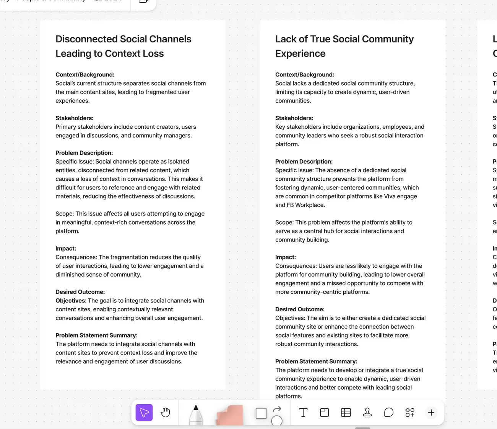
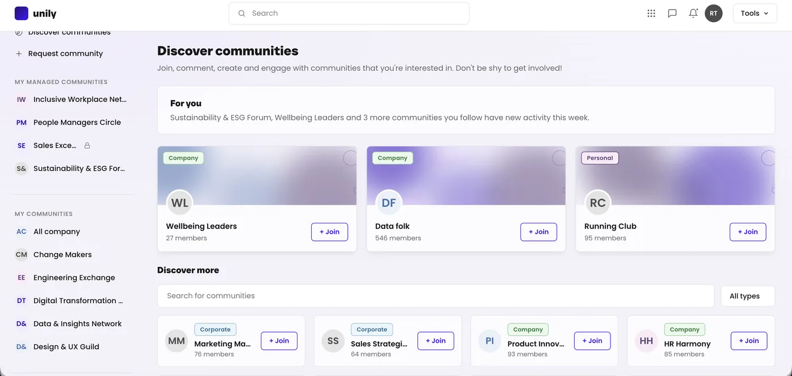
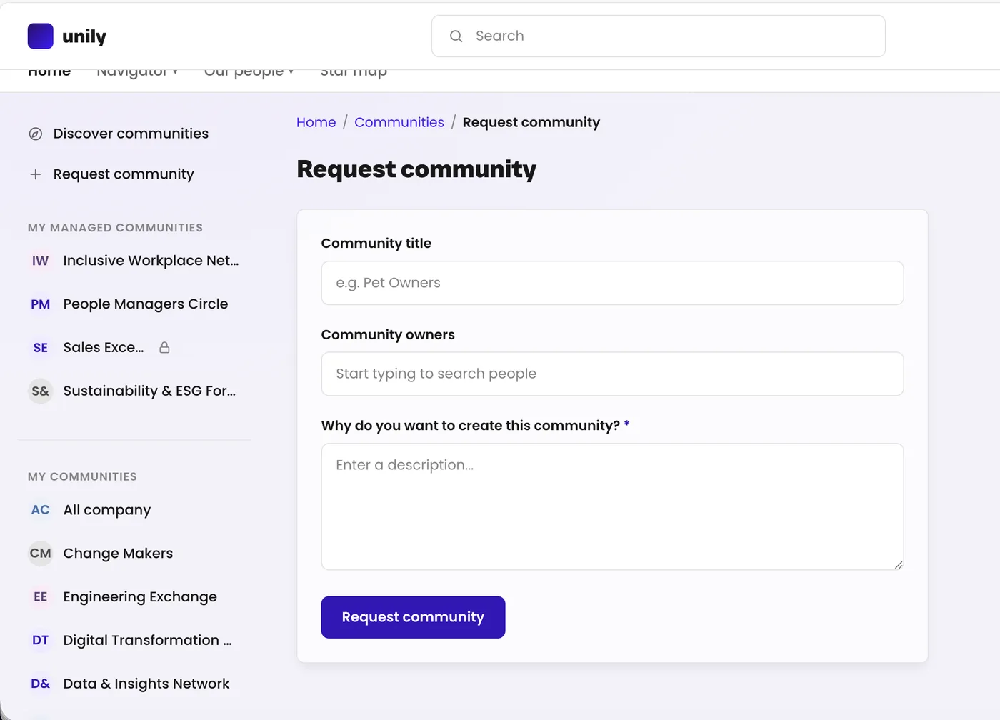
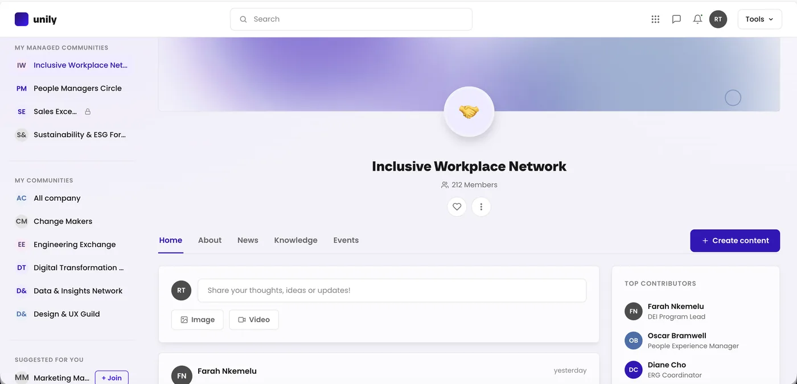
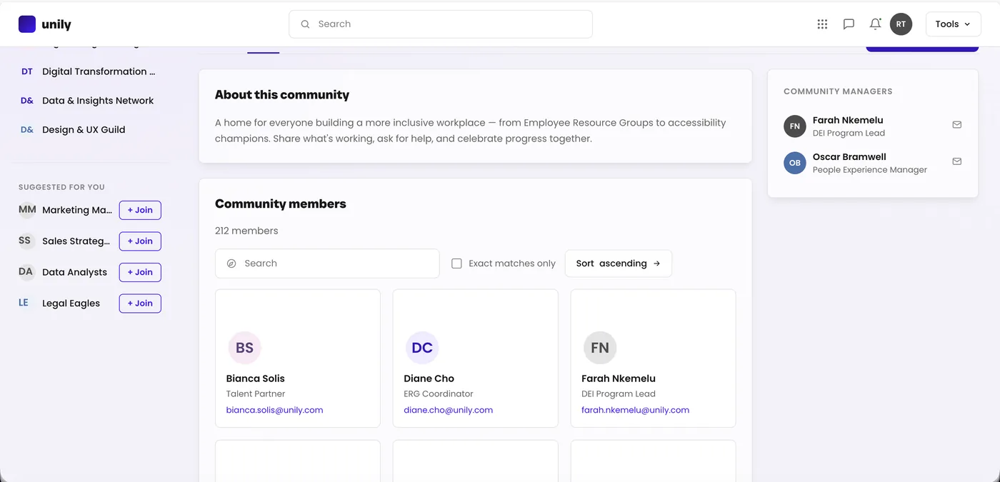
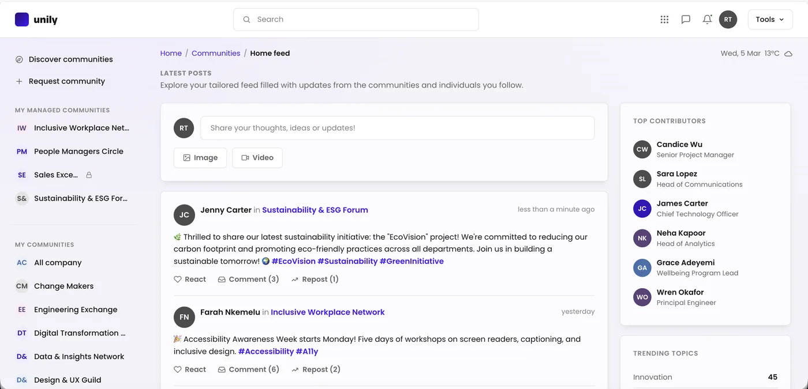
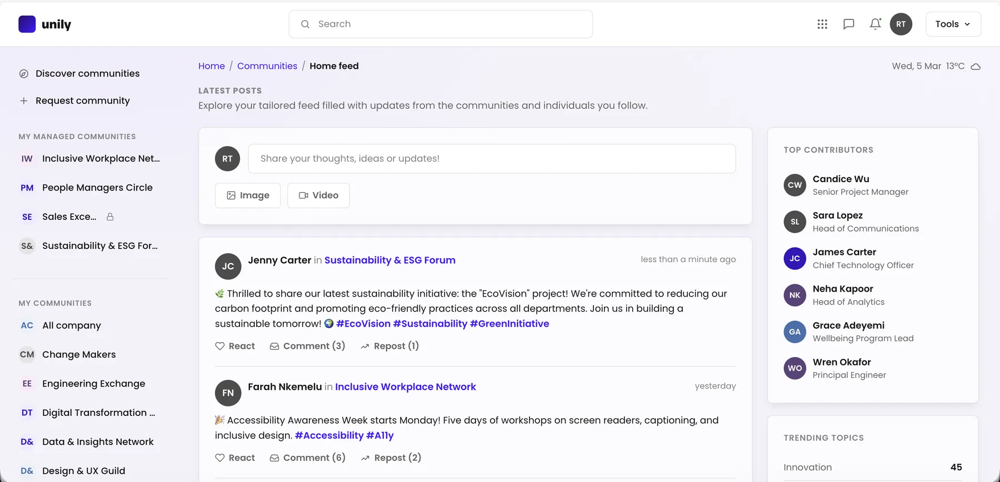
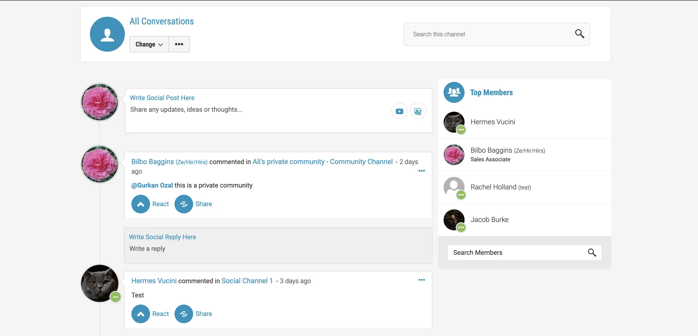

Unily · Case study · End to end
Five problems, one root cause
Redesigning Unily’s social experience from disconnected channels bolted onto content into dedicated Communities — with membership, discovery, network effects and knowledge sharing built in from the start.
✦ Impact
research problems resolved by one redesign rather than five point fixes
internal testers completed the guided request flow unaided, on 2 reused systems with none rebuilt
original problem statements mapped directly onto designed features, now in build
Discovery surfaced five separate problems with the platform’s social experience. The temptation was to treat them as five pieces of work. They weren’t.
Five threads that were all the same thread
Every one of the five traced back to the same thing: social had never been designed as its own experience. It lived next to content, never connected to it.
Disconnected
Channels cut off from the content they related to, so users lost the thread mid-conversation.
No structure
Only channels, no real communities — unable to compete with Viva Engage or Facebook Workplace.
No network effect
Without cross-referencing or @mentions across sites, posts couldn’t spread beyond their original audience.
Too complex to set up
Actively suppressing adoption among the community managers meant to be driving it.
Scattered knowledge
Silos and repeated work rather than a shared resource.
Reading them as one problem rather than five is what made a redesign the right answer instead of a backlog of fixes.

Communities as a first-class thing, not a feed attached to content
Rather than patch the existing social channels one problem at a time, I mapped Communities as a distinct object in the platform’s IA: membership, a structured set of tabs — Home, About, News, Knowledge, Events — and a discovery layer for finding and requesting new ones, sitting alongside content sites rather than inside them.
One structure had to serve two very different community types: official, org-wide ones and grassroots, employee-created ones — without either feeling like an afterthought. One core object, configurable across both, rather than a generic template that fits neither.
Communities are useless if nobody finds them
“Suggested for you” surfaces relevant communities automatically, so employees find and join one without being told it exists. Managers request a new community through a guided flow instead of raising a support ticket — which was the single biggest brake on adoption.
Top contributors and trending topics generate automatically from real activity and hashtags. Curating them by hand doesn’t scale, and would have reintroduced exactly the manager burden the redesign set out to remove.
Deep dive
Finding, joining and running a community
The journey the redesign opened up — from discovering a community you didn’t know existed to setting one up without a support ticket.




Use the arrow keys or buttons to step through
Two existing systems, no parallel build
Communities run on the block system from Unily Futures — card grids for trending topics and contributors, the Events block for the “Upcoming events” widget — rather than a bespoke component set.
That is also why Events could appear meaningfully inside a Community with no additional engineering: the object model already existed. The Knowledge tab was scoped directly with the teams already responsible for knowledge management, so Communities became a surface for existing knowledge tools rather than a competing one.

Every finding got a full answer, not a partial one
Communities has not launched, so there are no post-launch numbers to report. It will be judged on setup time from 9 days to under 15 minutes, 30% of employees joining at least one community within 90 days, communities created per quarter, and manager feedback. In internal testing with 24 testers, 21 completed the guided request flow unaided.
The clearest pre-launch signal was how directly the five original problem statements mapped onto designed features. Every research finding had a full answer in the final design rather than a partial one — which is the test I’d apply to any redesign that starts from a list of complaints.
The same posts, either side of the redesign
Before, social was a channel stream: every post in one undifferentiated list. After, the feed is built from the communities you belong to — each post attributed to its community, alongside contributors and trending topics generated from the activity itself.


Reflection and learnings
Reuse surfaces edge cases nobody owns
The biggest lesson: building on existing systems was the right call, and it means the edges between systems need as much design as the screens.
What I got wrong
Reusing the Event object inside Communities surfaced edge cases neither team had scoped — what happens to a community-hosted event if the community is archived, for one.
Automated trending topics needed real usage data to tune. Early internal testing produced either too few topics or ones that felt arbitrary, until the thresholds were adjusted.
Migrating existing social channel content into the new structure wasn’t scoped as tightly as the net-new experience, and needed more dedicated design time than planned.
What happens next
Notifications for community activity — mentions, replies and trending posts. The clearest next lever for the network effect.
Community-level analytics, so managers see adoption without relying on platform-wide reporting.
Purpose-built templates. A practice guild and an interest group don’t need the same shape, and that’s worth designing for.
Social feels like part of the product rather than a bolt-on — which was the original problem, stated as a solution.